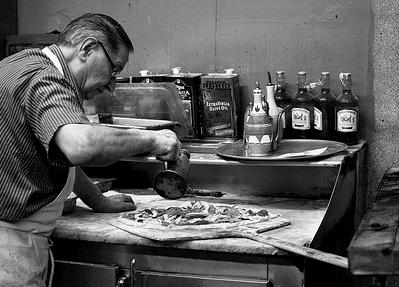

Apesar do nosso nome genérico, o sabor das nossas pizzas é único. Poucas pessoas tem a sorte de provar as nossas maravilhosas e excêntricas pizzas com mais variados sabores.
A história da nossa pizzaria é bem antiga, começa com um homem chamado Mario Zucchero, que fazia parte da máfia italiana(durante a época em que todos os integrantes se vestiam de maneira extravagante) e após ter sido obrigado a ver uma dancinha que fez alterações na sua mente, ele decidiu mudar de vida e começou a fazer pizza, criando a nossa maravilhosa pizza, mas três bandidos chamados: Lucas Miguel, Gabriela Leal e Gabriel Henrique roubaram a receita dele, e após terem roubado a receita, analisaram ela e aperfeiçoaram a tal receita, terminando a história do jeito como conhecemos hoje e criando assim, uma pizzaria renomada e conhecida mundialmente pelos nossos sabores autênticos. Espero que aproveite a sua refeição, é a única escolha que você tem.
